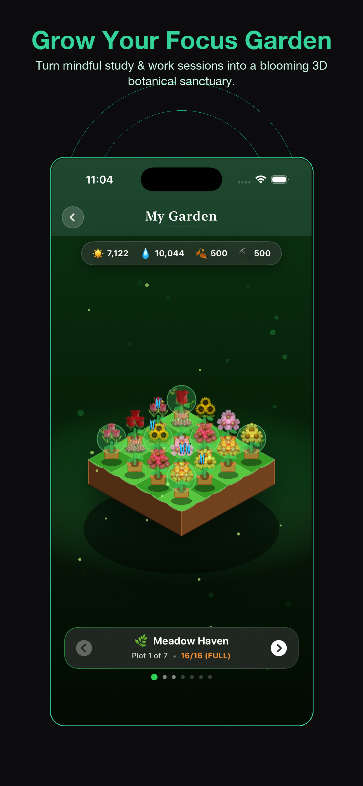

<!DOCTYPE html>
<html lang="en">
<head>
    <meta charset="UTF-8">
    <meta name="viewport" content="width=device-width, initial-scale=1.0">
    <meta name="author" content="themansigoel@gmail.com">
    <meta name="apple-itunes-app" content="app-id=6774886246">

    <!-- SEO & App Store Campaign Optimization -->
    <title>Pomodoro Timer - Grow Focus - Gamified 3D Living Botanical Focus Sanctuary</title>
    <meta name="description" content="Turn your focus sessions into an interactive 3D living botanical world. Orbit 7 isometric biomes, harvest solar tokens and rainwater, and cultivate rare plants as you study with Pomodoro Timer - Grow Focus.">
    <link rel="canonical" href="https://themansigoel.github.io/grow-focus-web/garden/" />

    <!-- Open Graph -->
    <meta property="og:type" content="website">
    <meta property="og:url" content="https://themansigoel.github.io/grow-focus-web/garden/">
    <meta property="og:title" content="Pomodoro Timer - Grow Focus - Gamified 3D Living Botanical Focus Sanctuary">
    <meta property="og:description" content="Turn your focus sessions into an interactive 3D botanical world. Cultivate rare plants across 7 isometric biomes with Pomodoro Timer - Grow Focus.">
    <meta property="og:image" content="https://themansigoel.github.io/grow-focus-web/assets/01_grow_focus_garden.png">

    <!-- Twitter -->
    <meta property="twitter:card" content="summary_large_image">
    <meta property="twitter:title" content="Pomodoro Timer - Grow Focus - Gamified 3D Living Botanical Focus Sanctuary">
    <meta property="twitter:description" content="Turn your focus sessions into an interactive 3D botanical world. Cultivate rare plants across 7 isometric biomes with Pomodoro Timer - Grow Focus.">
    <meta property="twitter:image" content="https://themansigoel.github.io/grow-focus-web/assets/01_grow_focus_garden.png">

    <link rel="stylesheet" href="../style.css">
    <link rel="preconnect" href="https://fonts.googleapis.com">
    <link rel="preconnect" href="https://fonts.gstatic.com" crossorigin>
    <link href="https://fonts.googleapis.com/css2?family=Plus+Jakarta+Sans:wght@400;500;600;700;800&display=swap" rel="stylesheet">

    <!-- Schema.org SoftwareApplication -->
    <script type="application/ld+json">
    {
      "@context": "https://schema.org",
      "@type": "SoftwareApplication",
      "name": "Pomodoro Timer - Grow Focus",
      "operatingSystem": "iOS 16.0 or later",
      "applicationCategory": "HealthApplication",
      "applicationSubCategory": "Productivity",
      "downloadUrl": "https://apps.apple.com/app/focus-timer-growfocus/id6774886246",
      "description": "Gamified focus timer and 3D botanical sanctuary with 7 biomes, ambient fauna, and anti-wilt stakes."
    }
    <!-- Favicon & Touch Icons -->
    <link rel="icon" type="image/png" sizes="32x32" href="../assets/favicon-32.png?v=3">
    <link rel="icon" type="image/png" href="../assets/app_icon.png?v=3">
    <link rel="apple-touch-icon" href="../assets/apple-touch-icon.png?v=3">
</head>
<body>
    <div class="bg-mesh"></div>

    <!-- Navigation -->
    <header class="navbar">
        <div class="nav-container">
            <a href="../index.html" class="brand-link">
                
                <span>Pomodoro Timer - Grow Focus <span style="font-size: 0.75rem; color: #6EE7B7; background: rgba(16, 185, 129, 0.15); padding: 2px 8px; border-radius: 9999px; margin-left: 6px;">3D Garden</span></span>
            </a>
            <nav class="nav-menu">
                <a href="#biomes" class="nav-link">7 Biomes</a>
                <a href="#features" class="nav-link">Botanical Engine</a>
                <a href="../articles/" class="nav-link">Focus Guides</a>
                <a href="#faq" class="nav-link">FAQ</a>
                <a href="../articles/" class="nav-link">Guides</a>
                <a href="https://apps.apple.com/app/focus-timer-growfocus/id6774886246" class="btn btn-primary" target="_blank">Get Free on App Store</a>
            </nav>
        </div>
    </header>

    <main>
        <!-- Hero Section -->
        <section class="cpp-hero">
            <div class="container">
                <div class="cpp-hero-grid">
                    <div class="cpp-hero-content">
                        <div class="cpp-appstore-badge-card">
                            
                            <div class="cpp-app-details">
                                <h4>Pomodoro Timer - Grow Focus</h4>
                                <p>Sunshine Studios • Health &amp; Productivity</p>
                                <div class="cpp-stars">
                                    <span>Focus with a growing 3D garden</span>
                                </div>
                            </div>
                        </div>

                        <div class="badge-pill">
                            <span>🌱 Gamified 3D Interactive Habit Sanctuary</span>
                        </div>

                        <h1 class="cpp-hero-title">
                            Turn Focus into a <br />
                            <span class="gradient-text">Living 3D Botanical World</span>
                        </h1>

                        <p class="cpp-hero-subtitle">
                            Every minute of deep study cultivates a living botanical ecosystem. Orbit, zoom, and nurture rare flora across 7 isometric biomes powered by Metal and SpriteKit. Harvest rainwater, collect sunlight tokens, and watch your habits bloom.
                        </p>

                        <div class="cpp-cta-group">
                            <a href="https://apps.apple.com/app/focus-timer-growfocus/id6774886246" class="app-store-badge" target="_blank">
                                
                            </a>
                            <span style="color: #6EE7B7; font-weight: 600; font-size: 0.95rem;">✓ 100% Free Core Features</span>
                        </div>

                        <div class="cpp-trust-badges">
                            <div class="cpp-trust-item"><span>🏝️</span> 7 Thematic Biomes</div>
                            <div class="cpp-trust-item"><span>💧</span> Dynamic Weather &amp; Fauna</div>
                            <div class="cpp-trust-item"><span>🦋</span> Ambient Butterflies &amp; Fireflies</div>
                        </div>
                    </div>

                    <div class="cpp-mockup-wrapper">
                        <div class="cpp-mockup-glow"></div>
                        
                    </div>
                </div>
            </div>
        </section>

        <!-- Stats Row -->
        <section class="cpp-stats-section">
            <div class="container">
                <div class="cpp-stats-grid">
                    <div class="cpp-stat-box">
                        <h3>7</h3>
                        <p>Isometric Biomes</p>
                    </div>
                    <div class="cpp-stat-box">
                        <h3>Metal</h3>
                        <p>Dynamic Particle Graphics</p>
                    </div>
                    <div class="cpp-stat-box">
                        <h3>10</h3>
                        <p>Cognitive Brain Gyms</p>
                    </div>
                    <div class="cpp-stat-box">
                        <h3>100%</h3>
                        <p>Ad-Free &amp; Private</p>
                    </div>
                </div>
            </div>
        </section>

        <!-- Biomes & Features -->
        <section id="biomes" class="section">
            <div class="container">
                <div class="section-header">
                    <span class="section-tag">Interactive World Building</span>
                    <h2 class="section-title">Where Focus Becomes Flora</h2>
                    <p class="section-desc">Experience an aesthetic study sanctuary designed to replace mindless smartphone addiction with visual delight.</p>
                </div>

                <div class="features-grid">
                    <div class="feature-box">
                        <div class="feature-icon-wrapper">🌸</div>
                        <h3 class="feature-heading">7 Thematic Biomes</h3>
                        <p class="feature-text">From Meadow Haven and Zen Bonsai to Sakura Peak and Cyberpunk Neon Garden, rotate and inspect living isometric scenes rendered in crisp Retina 3D.</p>
                    </div>
                    <div class="feature-box">
                        <div class="feature-icon-wrapper">💧</div>
                        <h3 class="feature-heading" id="features">Dynamic Resource Engine</h3>
                        <p class="feature-text">Harvest water drops during real-time rainstorms, collect sunlight tokens, and compose nutrient compost to accelerate rare botanical growth stages.</p>
                    </div>
                    <div class="feature-box">
                        <div class="feature-icon-wrapper">✨</div>
                        <h3 class="feature-heading">Ambient Fauna &amp; Audio</h3>
                        <p class="feature-text">Butterflies flutter across blossoming petals, fireflies twinkle in dark mode, and gentle koi swim in crystal ponds, accompanied by calming ambient audio.</p>
                    </div>
                </div>
            </div>
        </section>

        <!-- FAQ Section -->
        <section id="faq" class="section">
            <div class="container">
                <div class="section-header">
                    <span class="section-tag">Garden FAQ</span>
                    <h2 class="section-title">Frequently Asked Questions</h2>
                </div>

                <div class="faq-list">
                    <div class="faq-item">
                        <h4 class="faq-q">How do I unlock new biomes and plants?</h4>
                        <p class="faq-a">As you complete focus timer sessions and cognitive attention games, you earn solar energy and rainwater drops. These resources allow you to cultivate rare botanical species and unlock new biomes like Zen Bonsai and Sakura Peak.</p>
                    </div>
                    <div class="faq-item">
                        <h4 class="faq-q">Can I rotate and zoom in on the 3D garden?</h4>
                        <p class="faq-a">Yes! The 3D botanical sanctuaries are rendered in real-time using Apple Metal and SpriteKit. You can use standard touch gestures to orbit, pan, and zoom into individual floral blooms and ambient wildlife.</p>
                    </div>
                    <div class="faq-item">
                        <h4 class="faq-q">Does the 3D graphics drain my iPhone battery?</h4>
                        <p class="faq-a">Not at all. The graphics pipeline is heavily optimized using native Swift and Metal shaders, entering low-power display refresh rates during active timer countdowns to conserve battery life.</p>
                    </div>
                </div>
            </div>
        </section>

        <!-- Final CTA Banner -->
        <section class="section" style="padding-top: 0;">
            <div class="container">
                <div class="article-cta-box">
                    <span class="section-tag">Begin Cultivating</span>
                    <h2 style="font-size: 2.2rem; color: #FFFFFF; margin-bottom: 16px;">Grow Your Botanical Sanctuary Today</h2>
                    <p style="color: #E2E8F0; max-width: 640px; margin: 0 auto 28px auto;">Download Pomodoro Timer - Grow Focus free on the iOS App Store. Bring peace, aesthetics, and unbreakable focus to your daily workflow.</p>
                    <a href="https://apps.apple.com/app/focus-timer-growfocus/id6774886246" class="app-store-badge" target="_blank">
                        
                    </a>
                </div>
            </div>
        </section>
    </main>

    <!-- Footer -->
    <footer class="footer">
        <div class="container">
            <div class="footer-grid">
                <div class="footer-brand">
                    <a href="../index.html" class="brand-link">
                        
                        <span>Pomodoro Timer - Grow Focus</span>
                    </a>
                    <p>The gamified 3D focus timer and cognitive attention training app for iOS. Build unbreakable attention habits.</p>
                </div>
                <div class="footer-col">
                    <h4>Custom Pages</h4>
                    <ul>
                        <li><a href="../garden/">3D Botanical Sanctuary</a></li>
                        <li><a href="../pomodoro/">Anti-Wilt Pomodoro</a></li>
                        <li><a href="../adhd/">ADHD Focus Gym</a></li>
                        <li><a href="../deep-work/">Deep Work for Devs</a></li>
                    </ul>
                </div>
                <div class="footer-col">
                    <h4>Focus Guides</h4>
                    <ul>
                        <li><a href="../articles/how-to-focus-when-working-from-home.html">Focus Working From Home</a></li>
                        <li><a href="../articles/pomodoro-technique-for-beginners.html">Pomodoro for Beginners</a></li>
                        <li><a href="../articles/how-to-stop-checking-your-phone-while-working.html">Stop Checking Your Phone</a></li>
                        <li><a href="../articles/how-to-build-a-deep-work-routine.html">Deep Work Routine</a></li>
                    </ul>
                </div>
                <div class="footer-col">
                    <h4>Legal &amp; Support</h4>
                    <ul>
                        <li><a href="../privacy.html">Privacy Policy</a></li>
                        <li><a href="../contact.html">Support &amp; Contact</a></li>
                        <li><a href="https://apps.apple.com/app/focus-timer-growfocus/id6774886246" target="_blank">App Store Page</a></li>
                    </ul>
                </div>
            </div>
            <div class="footer-bottom">
                <p>&copy; 2026 Mansi Agarwal. All rights reserved. Apple, iPhone, and Apple Watch are trademarks of Apple Inc.</p>
            </div>
        </div>
    </footer>
</body>
</html>
